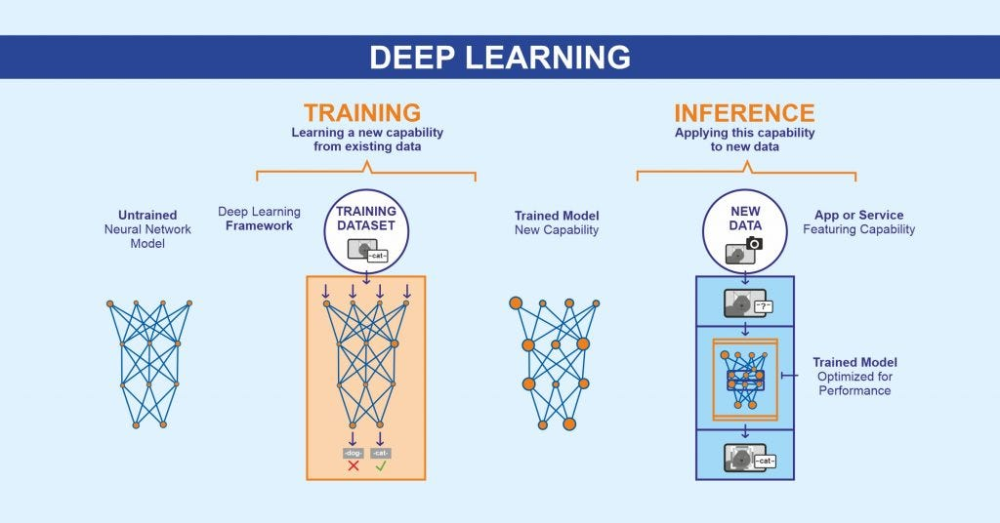

Every AI-generated image, video, audio clip, and text article is the product of machine learning. Understanding what machine learning is and how it works is the foundation for understanding all AI-generated media — and why that media is both so impressive and so potentially dangerous.
What Is Machine Learning?
Machine learning (ML) is a branch of artificial intelligence in which computer systems learn to perform tasks by studying examples, rather than by following explicit rules written by programmers. Instead of a developer writing code that says "if the image contains a cat, label it 'cat'," a machine learning model is shown thousands of labeled images of cats and learns to recognize them on its own by identifying the visual patterns that distinguish them from other objects.
This approach — learning from data rather than rules — is what makes machine learning so powerful and so flexible. The same fundamental techniques that allow a model to identify cats in photos can be adapted to generate images, compose music, write articles, clone voices, and create realistic video. Machine learning is the common thread that runs through every form of AI-generated media.

How ML Enables Media Generation
Machine learning enables media generation by allowing models to learn the underlying structure of different types of media and then produce new examples of that media from scratch. An ML model trained on millions of images learns what makes images look real — the distribution of colors, the patterns of light and shadow, the way objects relate spatially to one another. Once it has learned this, it can generate new images that have never existed before but look as though they could be real.
The same principle applies to every other media type. A model trained on music learns the patterns of melody, rhythm, and harmony. A model trained on text learns grammar, style, and the structure of arguments. The more data the model is trained on, and the more parameters it has to work with, the more sophisticated its outputs become.
Machine learning models do not understand media in the way humans do. They learn statistical patterns — which pixels tend to appear together, which words tend to follow each other — and use those patterns to generate plausible-sounding or plausible-looking output.
Key ML Techniques in Media
Several specific machine learning techniques are particularly important in AI media generation:
Deep Learning
Uses neural networks with many layers to learn increasingly abstract features from data — the foundation of all modern media generation.
GANs
Generative Adversarial Networks use two competing models to improve output quality — widely used in image and video generation.
Diffusion Models
Learn to reverse a noise-addition process to generate high-quality images and video — currently the dominant technique.
Transformers
Attention-based architectures that process sequences of data — the backbone of large language models and multimodal AI systems.
The Training-Inference Loop
Understanding the two phases of machine learning — training and inference — is essential for understanding how AI-generated media works. During the training phase, the model is exposed to enormous datasets and adjusts its parameters over millions of iterations to minimize errors. This phase is extremely computationally expensive and may take weeks on clusters of hundreds of specialized chips.
During the inference phase — when the model is actually used by someone — it applies everything it learned during training to generate new output. This phase is much faster and less computationally demanding. When you type a prompt into an image generator and receive a result in a few seconds, you are experiencing the inference phase of a model that took weeks and millions of dollars to train.

ML Across Media Types
Machine learning connects all forms of AI-generated media, even though the specific techniques and architectures differ across types. Here is how ML manifests across the main categories of AI-generated media:
- Images: Diffusion models and GANs learn visual patterns to generate new images from text prompts or random noise.
- Video: Video diffusion models extend image generation across time, learning how scenes and objects move and change.
- Audio: Autoregressive models and diffusion models learn the acoustic patterns of speech and music to generate new sound.
- Text: Transformer-based language models predict the next token in a sequence to generate coherent, contextually appropriate text.
- Deepfakes: Autoencoders and GANs learn a person's specific visual or vocal characteristics to replicate their likeness in new media.
Machine learning is not one technology — it is an entire philosophy of building systems: let the data teach the machine, rather than the programmer. This philosophy is what makes AI-generated media possible at scale.
— Foundations of Machine Learning, Applied ResearchImplications for Society
The fact that machine learning underlies all AI-generated media has profound implications for how we understand and trust the media we consume. ML models are shaped by their training data, which means they reflect the biases, perspectives, and gaps present in that data. An image model trained primarily on photos from one demographic may struggle to accurately represent others. A language model trained on biased text may reproduce and amplify those biases in its output.
Furthermore, because ML models can now generate highly convincing media in any format, the traditional signals we have relied on to assess the credibility of media — the difficulty of faking a video, the time required to write a convincing article — no longer apply in the same way. The ease and scale of ML-powered media generation fundamentally changes the information landscape, making media literacy a core civic skill rather than a niche interest.
ML models can generate convincing media in seconds, at minimal cost, at virtually unlimited scale. This changes not just what is possible, but what is probable — in terms of both creative content and harmful synthetic media.
What We've Learned
Machine learning is the common foundation beneath every type of AI-generated media. By learning statistical patterns from large datasets, ML models acquire the ability to generate new images, video, audio, and text that did not previously exist. Key techniques — deep learning, GANs, diffusion models, and transformers — each play distinct roles across different media types, but all share the same fundamental principle: learn from data, then generate.
Understanding this foundation helps us appreciate both the power and the limitations of AI-generated media, as well as the social implications of technology that can produce convincing synthetic content at unprecedented speed and scale. The answer to the challenges this creates lies not only in better detection tools, but in a more media-literate public equipped to evaluate what they see, hear, and read with critical awareness.
Machine learning gave AI the ability to create — but it also gave us new responsibilities as media consumers. Understanding how these systems work is the first step toward navigating the world they are reshaping.